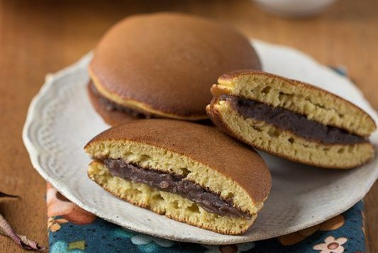

Dorayaki adalah kue yang berasal dari Jepang. Dorayaki termasuk ke dalam golongan kue tradisional Jepang. Kue ini berbentuk bundar sedikit tembam, dibuat dari dua lembar panekuk yang direkatkan dengan selai coklat.
Alat dan Bahan yang Diperlukan :
Alat
Alat pengocok atau whisk
Wajan anti lengket
Bahan
2 butir telur
100 gram gula
1 sdm madu
25 gram susu bubuk fullcream
125 gram tepung terigu
1/2 sdt soda kue
50 ml susu cair
Selai coklat secukupnya
Langkah Pembuatan

Kocok telur, gula, madu dengan alat pengocok atau whisk, sampai agak mengembang dan kental.
Masukkan tepung, susu bubuk, dan soda kue. Aduk dengan whisk.
Tambahkan susu cair kemudian aduk kembali dengan whisk. Diamkan selama kurang lebih 15 menit di dalam lemari pendingin.
Keluarkan dari lemari pendingin, kemudian aduk kembali sebentar. Tuang dengan sendok sayur ke wajan anti lengket yang sudah dipanaskan. Bila sudah berpori dan piggiran mulai mengering, balik. Biarkan sejenak, angkat. Lakukan hal yang sama hingga adonan habis.
Isi sisi dalam dorayaki dengan isian saus coklat atau selai sesuai selera, tumpuk dengan dorayaki lainnya. Tekan pinggirnya supaya menangkup.